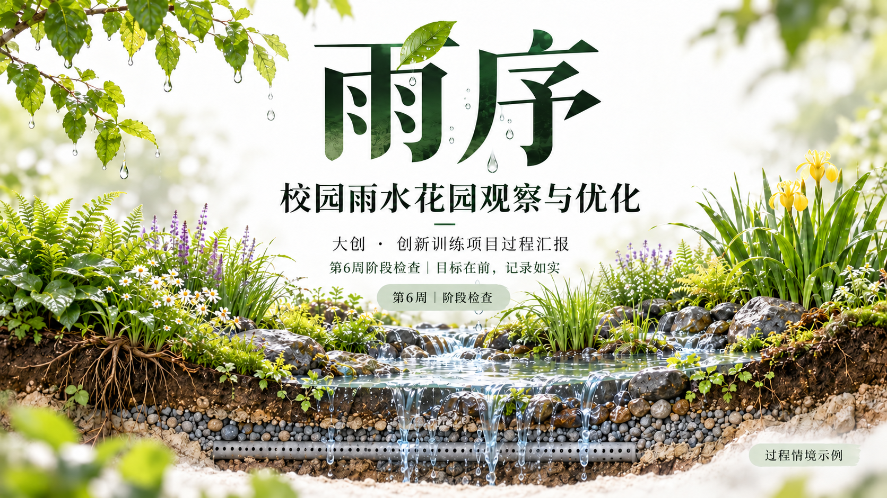
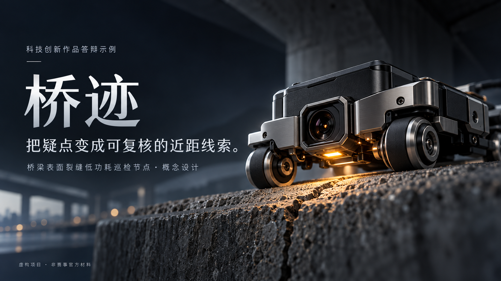

自然研究 · 7页

大创立项答辩
问题 → 目标 → 方法 → 条件 → 计划 → 成果与风险
大创立项、过程与结题，科技创新作品，创新创业路演。五套完整故事，各有表达重点。
问题 → 目标 → 方法 → 条件 → 计划 → 成果与风险

阶段目标 → 计划与实际 → 阶段产物 → 记录质量 → 调整 → 下一步

目标完成度 → 记录与结果 → 成果与贡献 → 资源 → 限制与后续

场景 → 原理 → 原型构想 → 验证设计 → 应用边界
用户任务 → 服务方案 → 试点 → 收支测算 → 团队计划
大创三阶段现已各有完整演示：立项7页讲依据、目标和方案；过程6页讲进度、缺失记录和调整；结题6页讲完成度、材料、资源和限制。三套沿用同一个虚构项目，保持叙事与视觉连续。
自然科学论文、社会调查、工程设计与职业技能竞赛从各自任务书出发，选择方法、现场、过程或成品证据。页数、构图和材质随内容决定。
阅读竞赛与项目答辩指南 ↗